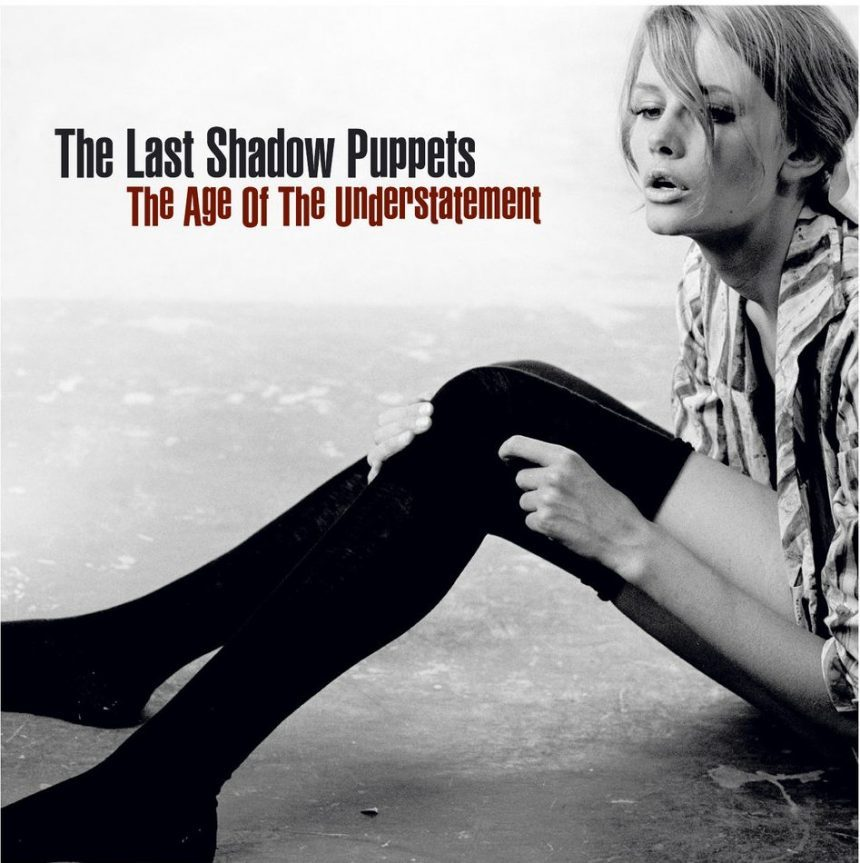
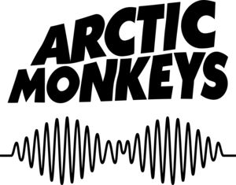

BIBIOGRAFIA, DISCOGRAFIA, PREMIOS Y CANCIONES PRINCIPALES


Submarine (2011)
Con Arctic Monkeys:
Whatever People Say I Am, That's What I'm Not (2006)
Favourite Worst Nightmare (2007)
Humbug (2009)
Suck It and See (2011)
AM (2013)
Tranquility Base Hotel & Casino (2018)
The Car (2022)
Con The Last Shadow Puppets:
The Age of the Understatement (2008)
Everything You've Come to Expect (2016)
Mercury Prize: Arctic Monkeys ganó el Mercury Prize en 2006 por su álbum debut "Whatever People Say I Am, That's What I'm Not".
Brit Awards: Arctic Monkeys han ganado varios premios Brit, Mejor Nuevo Artista Británico en 2006 Mejor Grupo Británico en 2007, 2008, 2012, 2014, 2019 y 2023, así como Álbum Británico del Año en 2007 por "Whatever People Say I Am, That's What I'm Not", 2008 por "Favourite Worst Nightmare" y 2014 por "AM", al igual como Mejor Artista en vivo en el 2008 y Mejor Artista de Rock Británico en el 2023.
NME Awards:Arctic Monkeys han ganado múltiples premios incluyendo Mejor Banda Británica en 2006, 2007, 2008, 2010, 2011, 2012, 2013, 2014 y 2015; Mejor Banda en Vivo en 2006, 2007, 2008, 2010, 2012, 2014 y 2015.Mejor canción en 2006, 2008, 2010, 2012, 2013 y 2014.Mejor álbum en 2007,2008, 2010, 2012 y 2014. Mejor Vídeo Musical en 2008, 2010, 2012, 2013 y 2014.Fans Más Dedicados 2010.Mejor Comujnidad de Fans en 2012 y 2014.Mejor DVD en 2007 y 2009. Y Mejor Nueva Banda en 2006
Ivor Novello Awards: Han sido nominados y ganado en varias categorías en los Ivor Novello Awards, que reconocen la excelencia en la composición musical.
MTV Europe Music Awards: Arctic Monkeys han ganado múltiples premios incluyendo Mejor Artista de Rock en 2014 y 2023.Mejor Artista Alternativo 2006, 2011, 2012 y 2013.Mejor Artista del Reino Unido e Irlanda 2006 y 2007.Mejor Actuacion en el World Stage en 2012. Y Mejor Artista en Vivo en 2007.

"Do I Wanna Know?" - Arctic Monkeys
"Fluorescent Adolescent" - Arctic Monkeys
"505" - Arctic Monkeys
"Cornerstone" - Arctic Monkeys
"R U Mine?" - Arctic Monkeys
"Star Treatment" - Arctic Monkeys
"Four Out of Five" - Arctic Monkeys
"Piledriver Waltz" - Alex Turner (del álbum en solitario "Submarine")
"One Point Perspective" - Arctic Monkeys
"My Propeller" - Arctic Monkeys